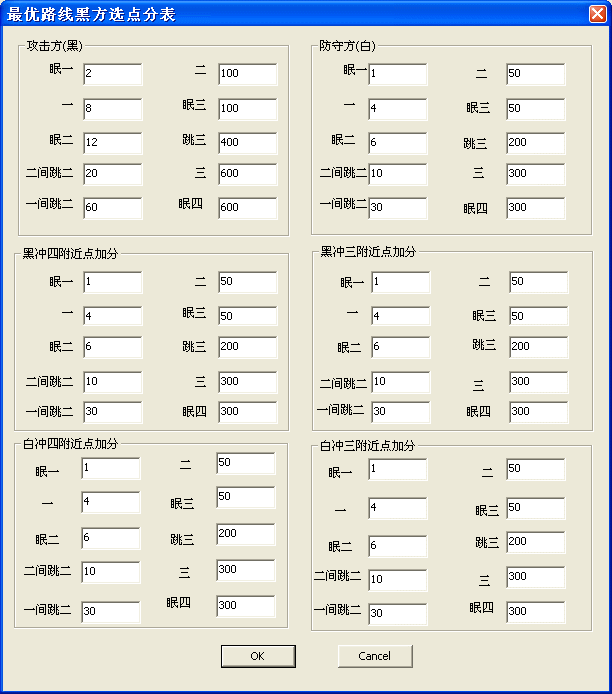
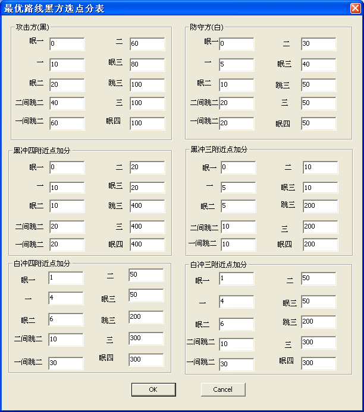
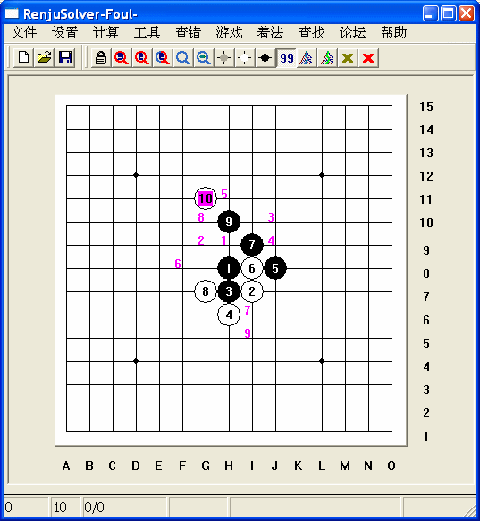
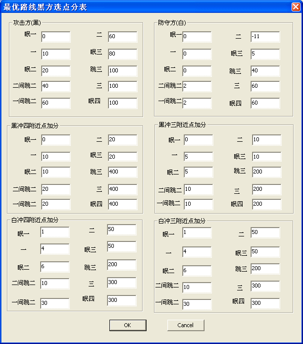
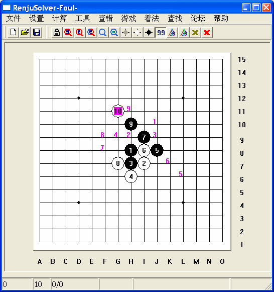

如何调试和设置出最佳的"最优路线选点分数设置
#1 如何调试和设置出最佳的"最优路线选点分数设置 作者：有志青年 发表时间：2008-8-30 12:54:26
1.准备工作 A:点锁头设置, a:中间栏靠下的下拉单里选BestLineMove, b:旁边的"显示个数"弄9. c:中间拦靠下,里面有个Debug选项,调钩. B:菜单项查错->盘面着法排序,选上,之后可以看到其前面有个一个小钩(意思就是已经起做用了).2.弄一个要研究的局面:我这里为了方便就随便选了个局面.

下面是对应的设置,菜单->设置->最优路线黑点值分表(因为当前轮黑方走棋). 若是轮白方走棋,就是菜单->设置->最优路线白点值分表.

我们现在要改动里面的值,目的是要让软件选点更合理,越是重要的点分越要高(例如上图的J10).从分数表可以看出,冲三,冲四的点分值比冲二冲三的分高很多.为了让通三路的点分更高,我们必须 缩小冲二,冲眠三的分于冲三冲眠四的分的差距.所以我做了如下的修改 回到局面,看点的顺序 右键回退一手,再把第10点左键加上去.排序明显不一样了 从图可看出J10这个点排到了第四. 若是我们还不满足,那就需要微调了. 为了知道各个点具体的分数,我们把软件的TOOLTIP显示打开: 点菜单设置->盘面显示->TOOLTIP, 这样我们可以把鼠标移动到点的位置观看当前各点的分数, TOOLTIP里有三项,第一项是坐标,第二项是软件内坐标,第三项就是我们关心的分数. 翻看H11(第三个点)的分,230.J10的分数225.相差5分, 所以我们只要把冲眠四的分减去10,那么J10就会排在H11的前面. 如图

对应的点的排序:
这一下选点评分就比较合理了, 细观察一下,感觉H11这个点并不大好,而排在了第5位,应该排的再后一些更合理.这个点也是白冲二的点,所以软件加了白冲二点的分,适当减少白冲二的分,


J10排在了第一位.
#2 Re:如何调试和设置出最佳的"最优路线选点分数设置 作者：gerbo 发表时间：2008-8-30 16:53:23
 谢谢4，由于这款软件透露的作者的设计思想，我们并不一定很好的体会设计思想，这样的帖子非常及时，如果以后发现了更好的设置方式也请大家多多发表。
谢谢4，由于这款软件透露的作者的设计思想，我们并不一定很好的体会设计思想，这样的帖子非常及时，如果以后发现了更好的设置方式也请大家多多发表。
#3 Re:如何调试和设置出最佳的"最优路线选点分数设置 作者：冷面孤煞 发表时间：2008-9-2 10:07:13
哪里买啊，给个地址#4 Re:如何调试和设置出最佳的"最优路线选点分数设置 作者：lfc 发表时间：2008-9-2 22:37:42
一直苦苦追寻最强的设置！#5 Re:如何调试和设置出最佳的"最优路线选点分数设置 作者：xr__ 发表时间：2008-9-26 7:29:55
先跟据你的理解 搞出N多的设置
然后慢慢进化 再调整！
#6 Re:Re:如何调试和设置出最佳的"最优路线选点分数设置 作者：闫荣辉 发表时间：2008-9-29 23:52:48
引用：ShowPost.asp?ThreadID=4519
原文由 冷面孤煞 发表于 2008-9-2 10:07:13 :
哪里买啊，给个地址
［ 有志青年 于 2008-9-30 8:01:43 时奖励此帖[金币加 20 威望加1］
#7 Re:如何调试和设置出最佳的"最优路线选点分数设置 作者：越狱行辕 发表时间：2008-11-2 15:35:59
为什么朋友的和这个不一样啊#8 Re:如何调试和设置出最佳的"最优路线选点分数设置 作者：刀魂 发表时间：2008-11-2 15:38:13
呵呵，这个是 搞软件开发用的啊、、、你忙怎么有。。。。
#9 Re:如何调试和设置出最佳的"最优路线选点分数设置 作者：甴曱 发表时间：2008-11-5 12:57:28
呵呵 顶了 原来算法是这样的 不错借鉴一下写自己的五子棋#10 Re:如何调试和设置出最佳的"最优路线选点分数设置 作者：猪猪快跑 发表时间：2009-10-20 13:39:44
楼主··
09版的为什么跟你这版本的表格对不上？
而且09版有好多新加的设置···
望楼主发下09版的分数表如何设置··
最好带图解··· 小弟感激不尽··！！
#11 Re:如何调试和设置出最佳的"最优路线选点分数设置 作者：猪猪快跑 发表时间：2009-12-12 22:01:09
图解完全跟08版和09版的2个概念了··
希望有会设置08或者09版本的吧图解放上来···！！
#12 Re:如何调试和设置出最佳的"最优路线选点分数设置 作者：啊呆 发表时间：2009-12-21 23:05:25
分数表看不出哪处有改动 改动的原数值时多少 改动后为多少 很难看出来 建议4兄在分数表上画圈标注一下 谢谢~
#13 Re:如何调试和设置出最佳的"最优路线选点分数设置 作者：棋生 发表时间：2010-8-16 0:30:04
图解完全跟08版和09版的确实2个概念了··
希望有会设置08或者09版本的吧图解放上来···！！
先谢谢啊！！！